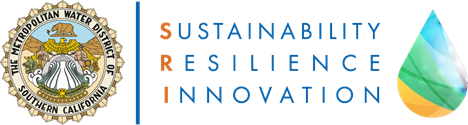

Protocol Institute Network
The Protocol Institute Network (PIN) is a collaborative network of institutional groups actively working on the many challenges of protocolization.
These include university research groups, private corporations, civic and governmental agencies, and nonprofits. PIN is meant to be a network of smaller units actively working on protocol-related projects and initiatives, with a clearly designated point of contact who is committed to being an active participant, rather than the parent organizations themselves.
If you're interested in having your group join the network, please share a few brief details via this form. You are also welcome to browse the PIN channel on our Discord, and contact Venkatesh Rao, Director of Research, with any questions.
